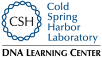

2023 Science, Technology, and Research Scholars Program
Cold Spring Harbor Laboratory, DNA Learning Center
Welcome to STARS
STARS is a STEM research enrichment program and designed to support the next generation of minority scientists, doctors, and other health professionals. This program provides students with state-of-the-art laboratory and computer science skills needed to succeed in STEM (science, technology, engineering, mathematics) in college and beyond.
Summer program description
Students will conduct hands-on science and computer projects and participate in hands-on activities including discussions with researchers and tours of the Cold Spring Harbor Laboratory and Stony Brook University campuses.
Academic year mentoring and alumni network
After the two-week summer program, students will also have a line of communication to mentors who can provide advice on finding future research experiences and preparing for college. High school alumni of the summer program will participate in monthly virtual and in-person meetups and projects. We support those students for applying for additional mentoring programs for research and medicine. College alumni are also provide support and invited back to contribute to the program as mentors. Ultimately, the STARS program succeeds when our students reach the career goals they have set for themselves.
2023 Important Reminders and Resources
A complete reminders page gives the full listing of conduct expectations and rules. Here is a quick reference of the most important info:
COVID Safety
- Students attending are encouraged to take a rapid test prior to attending. Students should remain home and call the front office if they have any cold/flu/COVID symptoms.
- Full guidelines for our COVID-19 protocols are on our COVID-19 Safety Net documentation.
Transportation
- Students who are receiving transportation support (through our bussing arrangements) are responsible for being early to their assigned pick-up/drop- off locations.
- Parents/guardians must assume all responsibilities for getting students to and from their chosen transportation option, and for providing students with a cell phone or other means to stay in contact.
- If any student will be late, absent, or misses their bus they must contact the bus company (if using) at the provided numbers AND the DNA Learning Center as soon as possible.
Contact and Directions
The DNA Learning Center is located at 334 Main St., Cold Spring Harbor, NY, 11724.
- Directions
- Main office phone is (516) 367-5170
Camp questions
Please contact Jason Williams (email).
Partners
